Conos group integration
Katharina Hembach
9/15/2020
Last updated: 2020-09-18
Checks: 7 0
Knit directory: neural_scRNAseq/
This reproducible R Markdown analysis was created with workflowr (version 1.6.2). The Checks tab describes the reproducibility checks that were applied when the results were created. The Past versions tab lists the development history.
Great! Since the R Markdown file has been committed to the Git repository, you know the exact version of the code that produced these results.
Great job! The global environment was empty. Objects defined in the global environment can affect the analysis in your R Markdown file in unknown ways. For reproduciblity it's best to always run the code in an empty environment.
The command set.seed(20200522) was run prior to running the code in the R Markdown file. Setting a seed ensures that any results that rely on randomness, e.g. subsampling or permutations, are reproducible.
Great job! Recording the operating system, R version, and package versions is critical for reproducibility.
Nice! There were no cached chunks for this analysis, so you can be confident that you successfully produced the results during this run.
Great job! Using relative paths to the files within your workflowr project makes it easier to run your code on other machines.
Great! You are using Git for version control. Tracking code development and connecting the code version to the results is critical for reproducibility.
The results in this page were generated with repository version 51fad17. See the Past versions tab to see a history of the changes made to the R Markdown and HTML files.
Note that you need to be careful to ensure that all relevant files for the analysis have been committed to Git prior to generating the results (you can use wflow_publish or wflow_git_commit). workflowr only checks the R Markdown file, but you know if there are other scripts or data files that it depends on. Below is the status of the Git repository when the results were generated:
Ignored files:
Ignored: .DS_Store
Ignored: .Rhistory
Ignored: .Rproj.user/
Ignored: ._.DS_Store
Ignored: ._Rplots.pdf
Ignored: ._Rplots_largeViz.pdf
Ignored: ._Rplots_separate.pdf
Ignored: .__workflowr.yml
Ignored: ._neural_scRNAseq.Rproj
Ignored: analysis/.DS_Store
Ignored: analysis/.Rhistory
Ignored: analysis/._.DS_Store
Ignored: analysis/._01-preprocessing.Rmd
Ignored: analysis/._01-preprocessing.html
Ignored: analysis/._02.1-SampleQC.Rmd
Ignored: analysis/._03-filtering.Rmd
Ignored: analysis/._04-clustering.Rmd
Ignored: analysis/._04-clustering.knit.md
Ignored: analysis/._04.1-cell_cycle.Rmd
Ignored: analysis/._05-annotation.Rmd
Ignored: analysis/._Lam-0-NSC_no_integration.Rmd
Ignored: analysis/._Lam-01-NSC_integration.Rmd
Ignored: analysis/._Lam-02-NSC_annotation.Rmd
Ignored: analysis/._NSC-1-clustering.Rmd
Ignored: analysis/._NSC-2-annotation.Rmd
Ignored: analysis/.__site.yml
Ignored: analysis/._additional_filtering.Rmd
Ignored: analysis/._additional_filtering_clustering.Rmd
Ignored: analysis/._index.Rmd
Ignored: analysis/._organoid-01-clustering.Rmd
Ignored: analysis/._organoid-02-integration.Rmd
Ignored: analysis/._organoid-03-cluster_analysis.Rmd
Ignored: analysis/._organoid-04-group_integration.Rmd
Ignored: analysis/._organoid-05-group_integration_cluster_analysis.Rmd
Ignored: analysis/._organoid-05-stage_integration_cluster_analysis.Rmd
Ignored: analysis/._organoid-06-1-prepare-sce.Rmd
Ignored: analysis/._organoid-06-conos-analysis-Seurat.Rmd
Ignored: analysis/._organoid-06-conos-analysis-function.Rmd
Ignored: analysis/._organoid-06-conos-analysis.Rmd
Ignored: analysis/._organoid-06-group-integration-conos-analysis.Rmd
Ignored: analysis/._organoid-07-conos-visualization.Rmd
Ignored: analysis/._organoid-07-group-integration-conos-visualization.Rmd
Ignored: analysis/._organoid-08-conos-comparison.Rmd
Ignored: analysis/._organoid-0x-sample_integration.Rmd
Ignored: analysis/01-preprocessing_cache/
Ignored: analysis/02-1-SampleQC_cache/
Ignored: analysis/02-quality_control_cache/
Ignored: analysis/02.1-SampleQC_cache/
Ignored: analysis/03-filtering_cache/
Ignored: analysis/04-clustering_cache/
Ignored: analysis/04.1-cell_cycle_cache/
Ignored: analysis/05-annotation_cache/
Ignored: analysis/Lam-01-NSC_integration_cache/
Ignored: analysis/Lam-02-NSC_annotation_cache/
Ignored: analysis/NSC-1-clustering_cache/
Ignored: analysis/NSC-2-annotation_cache/
Ignored: analysis/additional_filtering_cache/
Ignored: analysis/additional_filtering_clustering_cache/
Ignored: analysis/organoid-01-clustering_cache/
Ignored: analysis/organoid-02-integration_cache/
Ignored: analysis/organoid-03-cluster_analysis_cache/
Ignored: analysis/organoid-04-group_integration_cache/
Ignored: analysis/organoid-05-group_integration_cluster_analysis_cache/
Ignored: analysis/organoid-06-conos-analysis_cache/
Ignored: analysis/organoid-06-conos-analysis_test_cache/
Ignored: analysis/organoid-07-conos-visualization_cache/
Ignored: analysis/organoid-07-group-integration-conos-visualization_cache/
Ignored: analysis/organoid-08-conos-comparison_cache/
Ignored: analysis/organoid-0x-sample_integration_cache/
Ignored: analysis/sample5_QC_cache/
Ignored: data/.DS_Store
Ignored: data/._.DS_Store
Ignored: data/._.smbdeleteAAA17ed8b4b
Ignored: data/._Lam_figure2_markers.R
Ignored: data/._known_NSC_markers.R
Ignored: data/._known_cell_type_markers.R
Ignored: data/._metadata.csv
Ignored: data/data_sushi/
Ignored: data/filtered_feature_matrices/
Ignored: output/.DS_Store
Ignored: output/._.DS_Store
Ignored: output/._NSC_cluster1_marker_genes.txt
Ignored: output/._organoid_integration_cluster1_marker_genes.txt
Ignored: output/Lam-01-clustering.rds
Ignored: output/NSC_1_clustering.rds
Ignored: output/NSC_cluster1_marker_genes.txt
Ignored: output/NSC_cluster2_marker_genes.txt
Ignored: output/NSC_cluster3_marker_genes.txt
Ignored: output/NSC_cluster4_marker_genes.txt
Ignored: output/NSC_cluster5_marker_genes.txt
Ignored: output/NSC_cluster6_marker_genes.txt
Ignored: output/NSC_cluster7_marker_genes.txt
Ignored: output/additional_filtering.rds
Ignored: output/conos/
Ignored: output/conos_organoid-06-conos-analysis.rds
Ignored: output/conos_organoid-06-group-integration-conos-analysis.rds
Ignored: output/figures/
Ignored: output/organoid_integration_cluster10_marker_genes.txt
Ignored: output/organoid_integration_cluster11_marker_genes.txt
Ignored: output/organoid_integration_cluster12_marker_genes.txt
Ignored: output/organoid_integration_cluster13_marker_genes.txt
Ignored: output/organoid_integration_cluster14_marker_genes.txt
Ignored: output/organoid_integration_cluster15_marker_genes.txt
Ignored: output/organoid_integration_cluster16_marker_genes.txt
Ignored: output/organoid_integration_cluster17_marker_genes.txt
Ignored: output/organoid_integration_cluster1_marker_genes.txt
Ignored: output/organoid_integration_cluster2_marker_genes.txt
Ignored: output/organoid_integration_cluster3_marker_genes.txt
Ignored: output/organoid_integration_cluster4_marker_genes.txt
Ignored: output/organoid_integration_cluster5_marker_genes.txt
Ignored: output/organoid_integration_cluster6_marker_genes.txt
Ignored: output/organoid_integration_cluster7_marker_genes.txt
Ignored: output/organoid_integration_cluster8_marker_genes.txt
Ignored: output/organoid_integration_cluster9_marker_genes.txt
Ignored: output/sce_01_preprocessing.rds
Ignored: output/sce_02_quality_control.rds
Ignored: output/sce_03_filtering.rds
Ignored: output/sce_03_filtering_all_genes.rds
Ignored: output/sce_06-1-prepare-sce.rds
Ignored: output/sce_organoid-01-clustering.rds
Ignored: output/sce_preprocessing.rds
Ignored: output/so_04-group_integration.rds
Ignored: output/so_04_1_cell_cycle.rds
Ignored: output/so_04_clustering.rds
Ignored: output/so_0x-sample_integration.rds
Ignored: output/so_additional_filtering_clustering.rds
Ignored: output/so_integrated_organoid-02-integration.rds
Ignored: output/so_merged_organoid-02-integration.rds
Ignored: output/so_organoid-01-clustering.rds
Ignored: output/so_sample_organoid-01-clustering.rds
Untracked files:
Untracked: Rplots.pdf
Untracked: Rplots_largeViz.pdf
Untracked: Rplots_separate.pdf
Untracked: analysis/Lam-0-NSC_no_integration.Rmd
Untracked: analysis/additional_filtering.Rmd
Untracked: analysis/additional_filtering_clustering.Rmd
Untracked: analysis/organoid-05-stage_integration_cluster_analysis.Rmd
Untracked: analysis/organoid-06-conos-analysis-Seurat.Rmd
Untracked: analysis/organoid-06-conos-analysis-function.Rmd
Untracked: analysis/organoid-07-conos-visualization.Rmd
Untracked: analysis/organoid-07-group-integration-conos-visualization.Rmd
Untracked: analysis/organoid-08-conos-comparison.Rmd
Untracked: analysis/organoid-0x-sample_integration.Rmd
Untracked: analysis/sample5_QC.Rmd
Untracked: data/Homo_sapiens.GRCh38.98.sorted.gtf
Untracked: data/Kanton_et_al/
Untracked: data/Lam_et_al/
Untracked: scripts/
Unstaged changes:
Modified: analysis/Lam-02-NSC_annotation.Rmd
Modified: analysis/_site.yml
Modified: analysis/organoid-02-integration.Rmd
Modified: analysis/organoid-04-group_integration.Rmd
Modified: analysis/organoid-06-conos-analysis.Rmd
Note that any generated files, e.g. HTML, png, CSS, etc., are not included in this status report because it is ok for generated content to have uncommitted changes.
These are the previous versions of the repository in which changes were made to the R Markdown (analysis/organoid-06-group-integration-conos-analysis.Rmd) and HTML (docs/organoid-06-group-integration-conos-analysis.html) files. If you've configured a remote Git repository (see ?wflow_git_remote), click on the hyperlinks in the table below to view the files as they were in that past version.
| File | Version | Author | Date | Message |
|---|---|---|---|---|
| Rmd | 51fad17 | khembach | 2020-09-18 | use cell line and age as integration groups |
| html | 031fd4c | khembach | 2020-09-16 | Build site. |
| Rmd | ec8eba6 | khembach | 2020-09-16 | conos analysis with cell line integration |
## set seed for reproducibility
set.seed(1)Load packages
library(dplyr)
library(Seurat)
library(SingleCellExperiment)
library(pagoda2)
library(conos)
library(data.table)
library(magrittr)
library(ggplot2)Preprocessing
We integrate the samples by cell line and age/Stage.
n_cores <- 20
sce_file <- file.path("output", "sce_06-1-prepare-sce.rds")
sce <- readRDS(sce_file)
sce$integration_group <- ifelse(sce$group_id %in% c("H9", "409b2"),
paste0(sce$Stage, "_", sce$group_id),
sce$group_id)
cols_dt <- as.data.table(colData(sce))
cols_dt$cell_id <- rownames(colData(sce))
sample_list <- as.character(unique(sce$integration_group))
## Pagoda2 requires dgCMatrix matrix as input
counts_list <- lapply(sample_list, function(s)
counts(sce[, colData(sce)$integration_group == s]))
names(counts_list) <- sample_list
# check if cell names will be unique
stopifnot(any(duplicated(unlist(lapply(counts_list,colnames)))) == FALSE)
## we do not filter lowly expressed genes
counts_proc <- lapply(counts_list, basicP2proc,
n.cores = n_cores, nPcs = 50, min.cells.per.gene = 0,
n.odgenes = 2e3, get.largevis = FALSE, get.tsne = FALSE,
make.geneknn = FALSE)16739 cells, 17890 genes; normalizing ... using plain model winsorizing ... log scale ... done.
calculating variance fit ... using gam 488 overdispersed genes ... 488persisting ... done.
running PCA using 2000 OD genes .... done
16125 cells, 17890 genes; normalizing ... using plain model winsorizing ... log scale ... done.
calculating variance fit ... using gam 1471 overdispersed genes ... 1471persisting ... done.
running PCA using 2000 OD genes .... done
8133 cells, 17890 genes; normalizing ... using plain model winsorizing ... log scale ... done.
calculating variance fit ... using gam 2057 overdispersed genes ... 2057persisting ... done.
running PCA using 2000 OD genes .... done
1943 cells, 17890 genes; normalizing ... using plain model winsorizing ... log scale ... done.
calculating variance fit ... using gam 172 overdispersed genes ... 172persisting ... done.
running PCA using 2000 OD genes .... done
2357 cells, 17890 genes; normalizing ... using plain model winsorizing ... log scale ... done.
calculating variance fit ... using gam 186 overdispersed genes ... 186persisting ... done.
running PCA using 2000 OD genes .... done
2445 cells, 17890 genes; normalizing ... using plain model winsorizing ... log scale ... done.
calculating variance fit ... using gam 264 overdispersed genes ... 264persisting ... done.
running PCA using 2000 OD genes .... done
855 cells, 17890 genes; normalizing ... using plain model winsorizing ... log scale ... done.
calculating variance fit ... using gam 135 overdispersed genes ... 135persisting ... done.
running PCA using 2000 OD genes .... done
1871 cells, 17890 genes; normalizing ... using plain model winsorizing ... log scale ... done.
calculating variance fit ... using gam 619 overdispersed genes ... 619persisting ... done.
running PCA using 2000 OD genes .... done
886 cells, 17890 genes; normalizing ... using plain model winsorizing ... log scale ... done.
calculating variance fit ... using gam 307 overdispersed genes ... 307persisting ... done.
running PCA using 2000 OD genes .... done
920 cells, 17890 genes; normalizing ... using plain model winsorizing ... log scale ... done.
calculating variance fit ... using gam 272 overdispersed genes ... 272persisting ... done.
running PCA using 2000 OD genes .... done
443 cells, 17890 genes; normalizing ... using plain model winsorizing ... log scale ... done.
calculating variance fit ... using gam 138 overdispersed genes ... 138persisting ... done.
running PCA using 2000 OD genes .... done
2416 cells, 17890 genes; normalizing ... using plain model winsorizing ... log scale ... done.
calculating variance fit ... using gam 670 overdispersed genes ... 670persisting ... done.
running PCA using 2000 OD genes .... done
2654 cells, 17890 genes; normalizing ... using plain model winsorizing ... log scale ... done.
calculating variance fit ... using gam 659 overdispersed genes ... 659persisting ... done.
running PCA using 2000 OD genes .... done
8056 cells, 17890 genes; normalizing ... using plain model winsorizing ... log scale ... done.
calculating variance fit ... using gam 978 overdispersed genes ... 978persisting ... done.
running PCA using 2000 OD genes .... done
9164 cells, 17890 genes; normalizing ... using plain model winsorizing ... log scale ... done.
calculating variance fit ... using gam 962 overdispersed genes ... 962persisting ... done.
running PCA using 2000 OD genes .... done
5673 cells, 17890 genes; normalizing ... using plain model winsorizing ... log scale ... done.
calculating variance fit ... using gam 1064 overdispersed genes ... 1064persisting ... done.
running PCA using 2000 OD genes .... done
3815 cells, 17890 genes; normalizing ... using plain model winsorizing ... log scale ... done.
calculating variance fit ... using gam 404 overdispersed genes ... 404persisting ... done.
running PCA using 2000 OD genes .... donecon <- Conos$new(counts_proc, n.cores = n_cores)Conos Pipeline - default parameters
Build joint graph
# define output files
clusts_file <- file.path("output", "conos", "conos_clusts_default.txt")
viz_file <- file.path("output", "conos", "conos_viz_default.txt")
umap_file <- file.path("output", "conos","conos_umap_default.txt")
graph_file <- file.path("output", "conos","conos_graph_default.txt")
# build joint graph
con$buildGraph(space = "PCA")found 0 out of 136 cached PCA space pairs ... running 136 additional PCA space pairs done
inter-sample links using mNN done
local pairs local pairs done
building graph ..done# find communities using Leiden community detection
res_list <- list(1, 1.2, 1.4, 1.6)
clusts_ls <- lapply(res_list, function(res) {
con$findCommunities(method = leiden.community, resolution = res)
con$clusters$leiden$groups})
## table with cell ID and cluster ID per resolution
conos_clusters <- do.call(cbind, clusts_ls) %>%
set_colnames(paste0('conos', res_list)) %>%
data.table %>%
.[, cell_id := names(con$clusters$leiden$groups)] %>%
setcolorder('cell_id')
# fwrite(conos_clusters, clusts_file)Graph embeddings
We embed the joint graph with two different methods: largeVis and UMAP.
## graph embedding: largeVis visualization
## using default parameters
con$embedGraph(method = 'largeVis')Estimating embeddings.viz_dt <- data.table(cell_id = rownames(con$embedding), con$embedding)
setnames(viz_dt, names(viz_dt), c("cell_id", "viz1", "viz2"))
# fwrite(viz_dt, viz_file)
## UMAP visualization
con$embedGraph(method = "UMAP", n.cores = n_cores)Convert graph to adjacency list...
Done
Estimate nearest neighbors and commute times...
Estimating hitting distances: 15:41:24.
Done.
Estimating commute distances: 15:41:55.
Hashing adjacency list: 15:41:55.
Done.
Estimating distances: 15:42:14.
Done
Done.
All done!: 15:42:50.
Done
Estimate UMAP embedding...
Doneumap_dt <- data.table(cell_id = rownames(con$embedding), con$embedding)
setnames(umap_dt, names(umap_dt), c("cell_id", "umap1", "umap2"))
# fwrite(umap_dt, umap_file)We define a plotting function to visualize the embeddings.
## function to plot the graph embedding
plot_conos <- function(dat, title = "", x = "", y = "", color = "sample_id") {
p <- ggplot(dat, aes(x = get(x), y = get(y), color = as.factor(get(color)))) +
geom_point(alpha = 0.5) +
scale_color_discrete(name = color) +
ggtitle(title) +
labs(x = x, y = y) +
theme_bw() +
theme(aspect.ratio = 1) +
guides(col = guide_legend(nrow = 16,
override.aes = list(size = 3, alpha = 1)))
print(p)
}And merge all results in a data.table.
## Function for merging the data.tables and organizing the factors for coloring
prepare_dt <- function(cols_dt, viz_dt, umap_dt, conos_clusters, size = 1e+04){
dat <- viz_dt %>% full_join(umap_dt) %>%
full_join(conos_clusters) %>%
full_join(cols_dt)
## label our cells with the group_id in the organoid metadata columns
dat$Stage <- ifelse(is.na(dat$Stage), dat$group_id, dat$Stage)
## we use factors for plotting
dat$integration_group <- factor(dat$integration_group,
levels = c("P22", "D52", "D96", "iPSCs_409b2", "iPSCs_H9", "EB_409b2",
"EB_H9", "Neuroectoderm_409b2", "Neuroectoderm_H9",
"Neuroepithelium_409b2", "Neuroepithelium_H9",
"Organoid-1M_409b2", "Organoid-1M_H9", "Organoid-2M_409b2",
"Organoid-2M_H9", "Organoid-4M_409b2", "Organoid-4M_H9"))
## reorder factor levels for plotting
dat$group_id <- factor(dat$group_id,
levels = c("P22", "D52", "D96", "H9", "409b2"))
## order levels according to experiment timeline (Fig. 1a)
dat$Stage <- factor(dat$Stage, levels = c("P22", "D52", "D96", "iPSCs", "EB",
"Neuroectoderm", "Neuroepithelium",
"Organoid-1M", "Organoid-2M",
"Organoid-4M"))
## merge the lineage labels of identical cell types
dat$cl_FullLineage <- as.factor(dat$cl_FullLineage)
levels(dat$cl_FullLineage) <- c("choroid plexus/mesenchymal-like cells",
"cortical neurons", "cortical neurons",
"cycling dorsal progenitors", "cycling ventral progenitors",
"ectodermal/neuroectodermal-like cells",
"gliogenic/outer RGCs and astrocytes",
"IPs and early cortical neurons", "midbrain/hindbrain cells",
"neuroepithelial-like cells", "retina progenitors", "RGCs",
"RGCs early", "RGCs early", "stem cells", "stem cells",
"stem cells", "ventral progenitors and neurons",
"ventral progenitors and neurons",
"ventral progenitors and neurons")
## convert columns to factor for plotting
dat <- dat %>% mutate_if(is.character, as.factor)
## we only plot a random sub sample of cells
selected <- sample(nrow(dat), size = size)
dat <- dat[selected,]
}
dat <- prepare_dt(cols_dt, viz_dt, umap_dt, conos_clusters, size = 1e+04)largeVis
## plot the embedding
for(res in names(dat)[startsWith(names(dat), "conos")]){
cat("#### ", res, "\n")
plot_conos(dat, title = "largeVis", x = "viz1", y = "viz2", color = res)
cat("\n\n")
}conos1
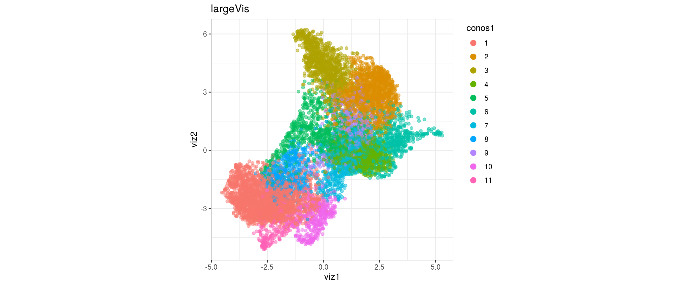
conos1.2

conos1.4
conos1.6
for(g in c("integration_group", "sample_id", "group_id", "Stage",
"cl_FullLineage")){
cat("#### ", g, "\n")
plot_conos(dat, title = "largeVis", x = "viz1", y = "viz2", color = g)
cat("\n\n")
}integration_group
sample_id
group_id
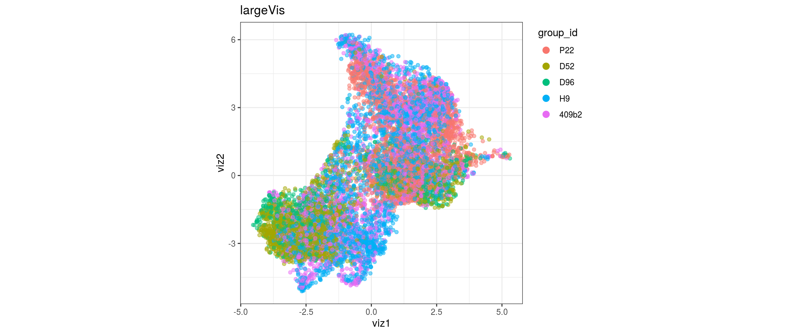
Stage
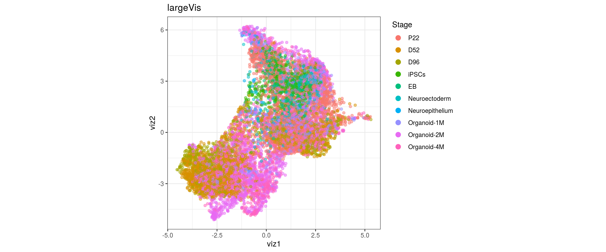
cl_FullLineage
UMAP
for(res in names(dat)[startsWith(names(dat), "conos")]){
cat("#### ", res, "\n")
plot_conos(dat, title = "UMAP", x = "umap1", y = "umap2", color = res)
cat("\n\n")
}conos1
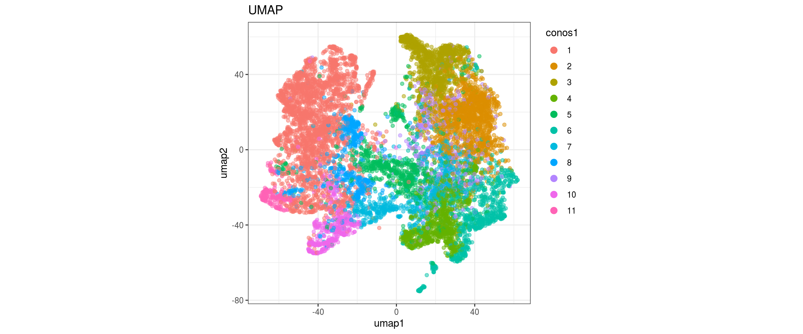
conos1.2
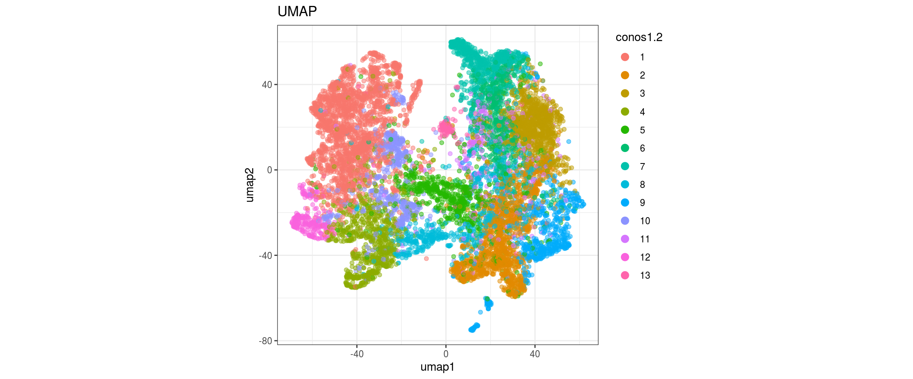
conos1.4
conos1.6
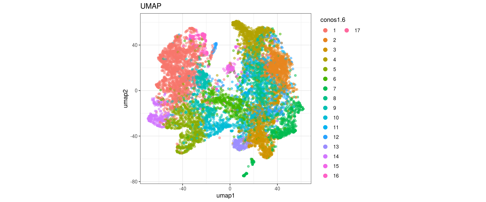
for(g in c("integration_group", "sample_id", "group_id", "Stage",
"cl_FullLineage")){
cat("#### ", g, "\n")
plot_conos(dat, title = "UMAP", x = "umap1", y = "umap2", color = g)
cat("\n\n")
}integration_group
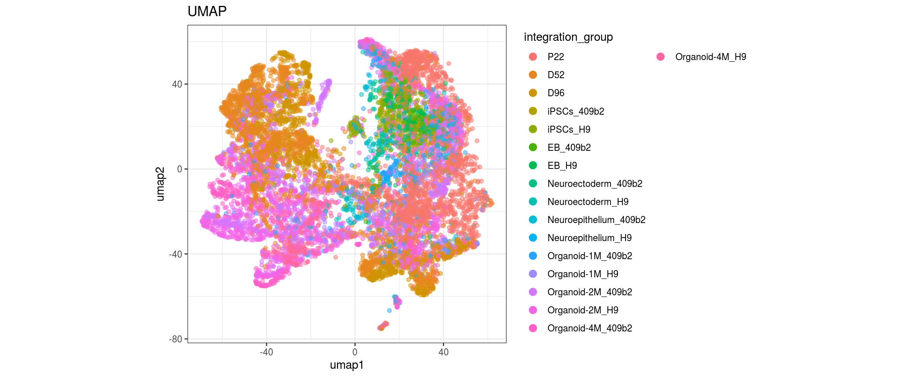
sample_id
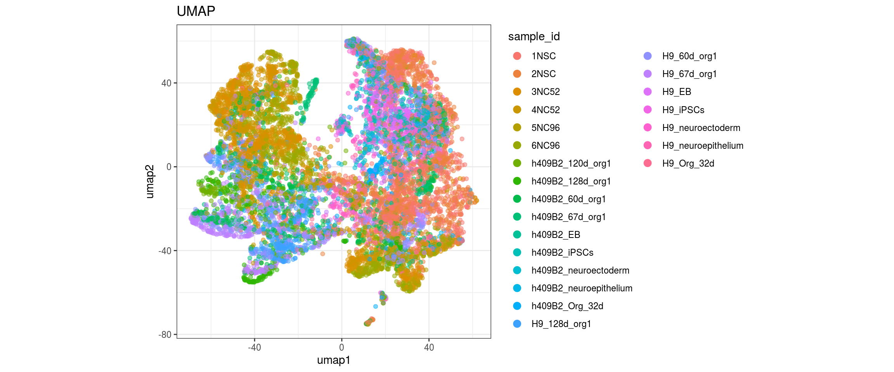
group_id
Stage
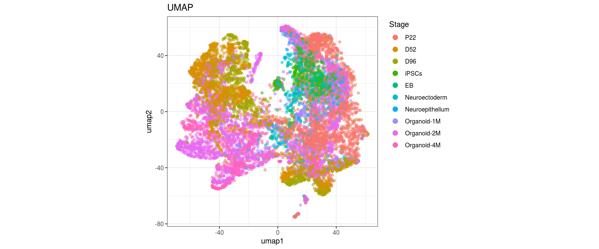
cl_FullLineage
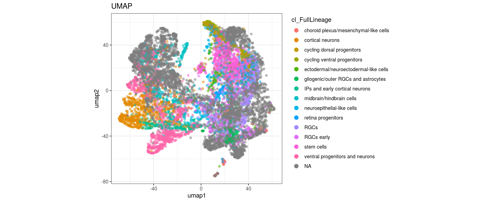
Conos with different parameters
All our samples were measured with 10X genomics and "genes" space is supposed to give better resolution for such (simpler) cases. The overdispersed gene space is used for graph construction instead of PCs. However, the resulting plots (not shown) are still clearly separated.
CPCA space
CPCA space should provide more accurate alignment under greater dataset-specific distortions.
Build joint graph
# build joint graph
con$buildGraph(space = "CPCA")found 0 out of 136 cached CPCA space pairs ... running 136 additional CPCA space pairs done
inter-sample links using mNN done
local pairs local pairs done
building graph ..done# find communities using Leiden community detection
clusts_ls <- lapply(res_list, function(res) {
con$findCommunities(method = leiden.community, resolution = res)
con$clusters$leiden$groups})
## table with cell ID and cluster ID per resolution
conos_clusters <- do.call(cbind, clusts_ls) %>%
set_colnames(paste0('conos', res_list)) %>%
data.table %>%
.[, cell_id := names(con$clusters$leiden$groups)] %>%
setcolorder('cell_id')
# fwrite(conos_clusters, clusts_file)Graph embeddings
We embed the joint graph with two different methods: largeVis and UMAP.
## graph embedding: largeVis visualization
con$embedGraph(method = 'largeVis')Estimating embeddings.viz_dt <- data.table(cell_id = rownames(con$embedding), con$embedding)
setnames(viz_dt, names(viz_dt), c("cell_id", "viz1", "viz2"))
# fwrite(viz_dt, viz_file)
## UMAP visualization
con$embedGraph(method = "UMAP", n.cores = n_cores)Convert graph to adjacency list...
Done
Estimate nearest neighbors and commute times...
Estimating hitting distances: 15:56:03.
Done.
Estimating commute distances: 15:56:40.
Hashing adjacency list: 15:56:40.
Done.
Estimating distances: 15:57:03.
Done
Done.
All done!: 15:57:37.
Done
Estimate UMAP embedding...
Doneumap_dt <- data.table(cell_id = rownames(con$embedding), con$embedding)
setnames(umap_dt, names(umap_dt), c("cell_id", "umap1", "umap2"))
# fwrite(umap_dt, umap_file)And merge all results in a data.table.
dat <- prepare_dt(cols_dt, viz_dt, umap_dt, conos_clusters, size = 1e+04)largeVis
## plot the embedding
for(res in names(dat)[startsWith(names(dat), "conos")]){
cat("#### ", res, "\n")
plot_conos(dat, title = "largeVis", x = "viz1", y = "viz2", color = res)
cat("\n\n")
}conos1
conos1.2
conos1.4
conos1.6
for(g in c("integration_group", "sample_id", "group_id", "Stage",
"cl_FullLineage")){
cat("#### ", g, "\n")
plot_conos(dat, title = "largeVis", x = "viz1", y = "viz2", color = g)
cat("\n\n")
}integration_group
sample_id
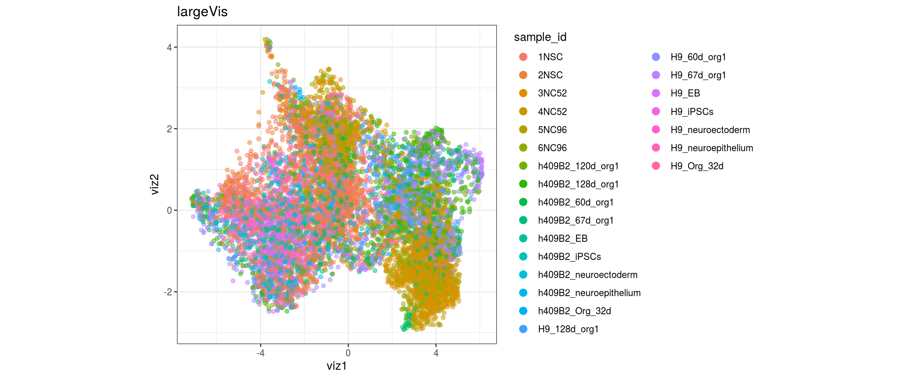
group_id
Stage
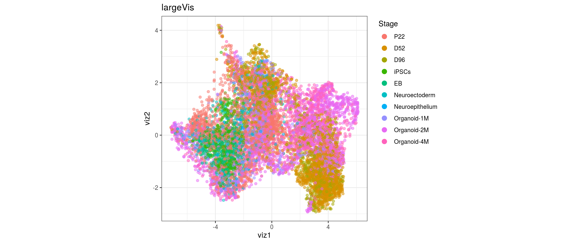
cl_FullLineage
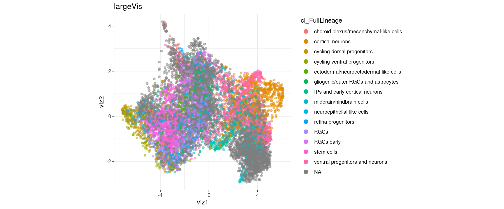
UMAP
for(res in names(dat)[startsWith(names(dat), "conos")]){
cat("#### ", res, "\n")
plot_conos(dat, title = "UMAP", x = "umap1", y = "umap2", color = res)
cat("\n\n")
}conos1
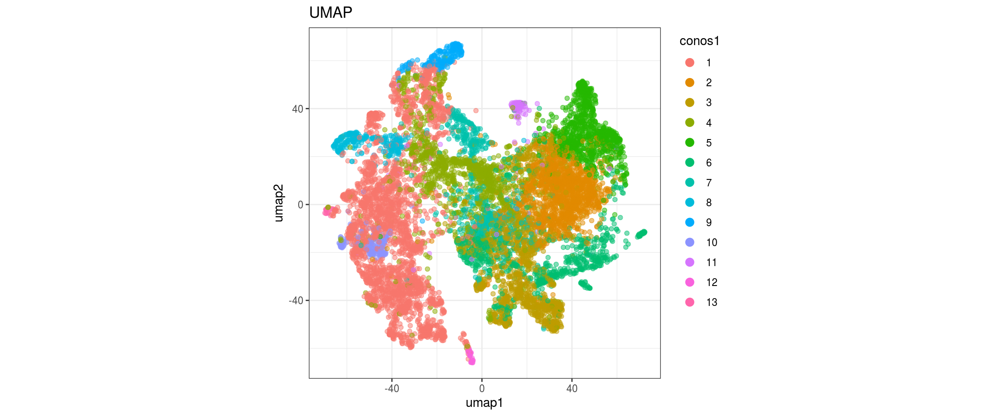
conos1.2
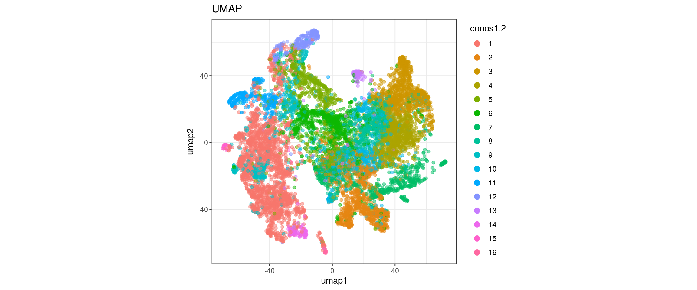
conos1.4
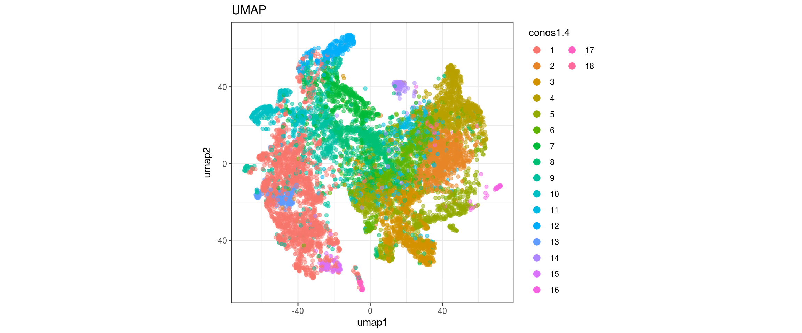
conos1.6
for(g in c("integration_group", "sample_id", "group_id", "Stage",
"cl_FullLineage")){
cat("#### ", g, "\n")
plot_conos(dat, title = "UMAP", x = "umap1", y = "umap2", color = g)
cat("\n\n")
}integration_group
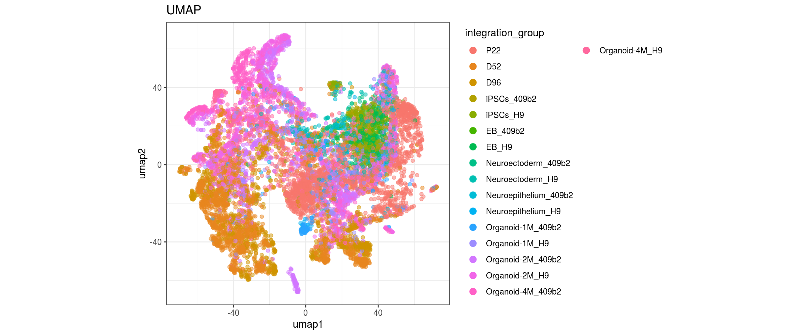
sample_id
group_id
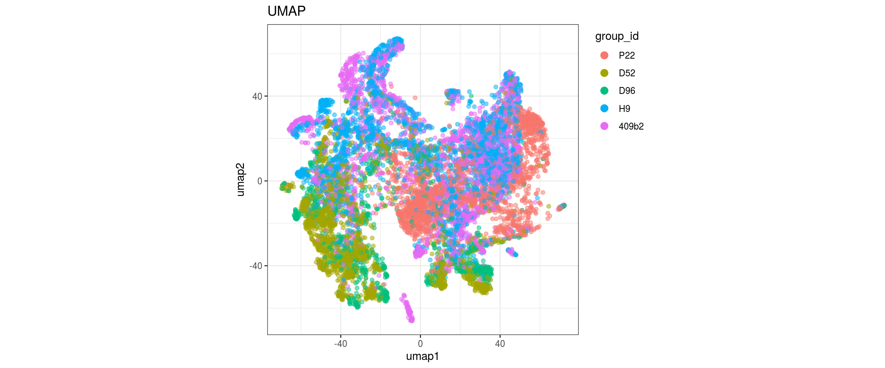
Stage
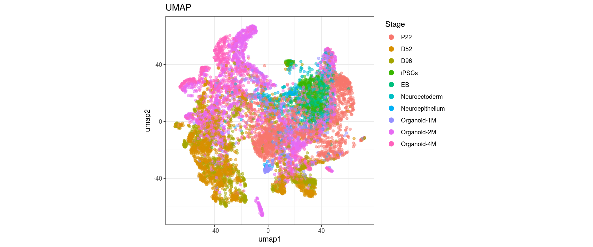
cl_FullLineage
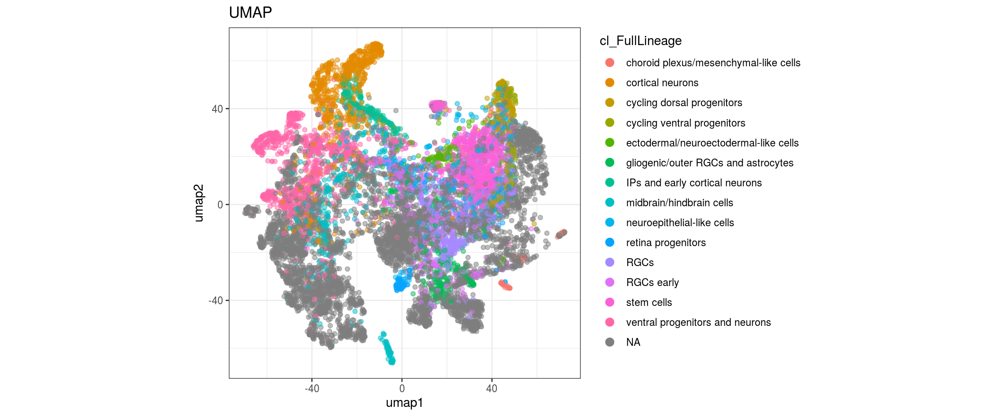
CCA space
CCA space optimizes conservation of correlation between datasets and can give yield very good alignments in low-similarity cases (e.g. large evolutionary distances).
Build joint graph
# build joint graph
con$buildGraph(space = "CCA")found 0 out of 136 cached CCA space pairs ... running 136 additional CCA space pairs done
inter-sample links using mNN done
local pairs local pairs done
building graph ..done# find communities using Leiden community detection
clusts_ls <- lapply(res_list, function(res) {
con$findCommunities(method = leiden.community, resolution = res)
con$clusters$leiden$groups})
## table with cell ID and cluster ID per resolution
conos_clusters <- do.call(cbind, clusts_ls) %>%
set_colnames(paste0('conos', res_list)) %>%
data.table %>%
.[, cell_id := names(con$clusters$leiden$groups)] %>%
setcolorder('cell_id')
# fwrite(conos_clusters, clusts_file)Graph embeddings
We embed the joint graph with two different methods: largeVis and UMAP.
## graph embedding: largeVis visualization
con$embedGraph(method = 'largeVis')Estimating embeddings.viz_dt <- data.table(cell_id = rownames(con$embedding), con$embedding)
setnames(viz_dt, names(viz_dt), c("cell_id", "viz1", "viz2"))
# fwrite(viz_dt, viz_file)
## UMAP visualization
con$embedGraph(method = "UMAP", n.cores = n_cores)Convert graph to adjacency list...
Done
Estimate nearest neighbors and commute times...
Estimating hitting distances: 16:15:12.
Done.
Estimating commute distances: 16:15:54.
Hashing adjacency list: 16:15:54.
Done.
Estimating distances: 16:16:27.
Done
Done.
All done!: 16:17:47.
Done
Estimate UMAP embedding...
Doneumap_dt <- data.table(cell_id = rownames(con$embedding), con$embedding)
setnames(umap_dt, names(umap_dt), c("cell_id", "umap1", "umap2"))
# fwrite(umap_dt, umap_file)And merge all results in a data.table.
dat <- prepare_dt(cols_dt, viz_dt, umap_dt, conos_clusters, size = 1e+04)largeVis
## plot the embedding
for(res in names(dat)[startsWith(names(dat), "conos")]){
cat("#### ", res, "\n")
plot_conos(dat, title = "largeVis", x = "viz1", y = "viz2", color = res)
cat("\n\n")
}conos1.6

| Version | Author | Date |
|---|---|---|
| 031fd4c | khembach | 2020-09-16 |
for(g in c("integration_group", "sample_id", "group_id", "Stage",
"cl_FullLineage")){
cat("#### ", g, "\n")
plot_conos(dat, title = "largeVis", x = "viz1", y = "viz2", color = g)
cat("\n\n")
}cl_FullLineage
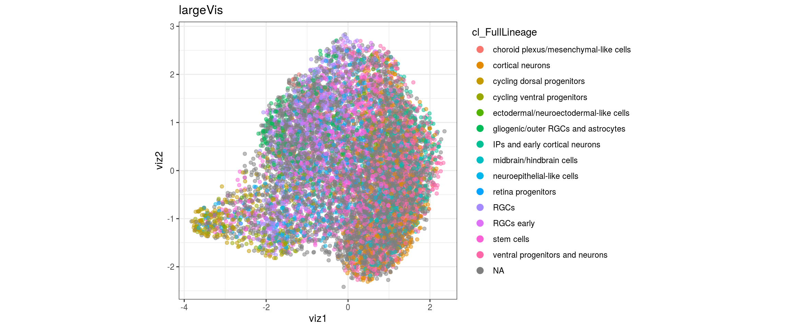
UMAP
for(res in names(dat)[startsWith(names(dat), "conos")]){
cat("#### ", res, "\n")
plot_conos(dat, title = "UMAP", x = "umap1", y = "umap2", color = res)
cat("\n\n")
}
conos1.6
| Version | Author | Date |
|---|---|---|
| 031fd4c | khembach | 2020-09-16 |
for(g in c("integration_group", "sample_id", "group_id", "Stage",
"cl_FullLineage")){
cat("#### ", g, "\n")
plot_conos(dat, title = "UMAP", x = "umap1", y = "umap2", color = g)
cat("\n\n")
}cl_FullLineage
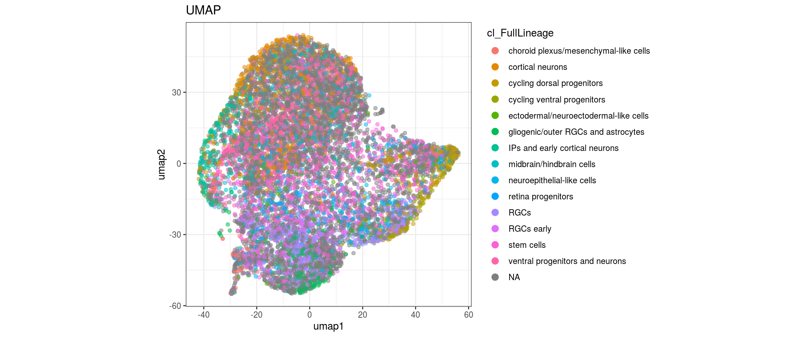
Embedding parameters
We choose CCA space for building the graph and try different parameters for the largeVis and UMAP embedding. The CCA UMAP is the only one where cells from the two organoid cell lines are merged in clusters and not separaterd. For largeVis we test larger alpha for tighter clusters and increased scd_batches to avoid that clusters intersect. For UMAP, we test lower min.dist which should lead to a more even dispersal of points and less clumped clusters.
We save the results to files.
# define output files
clusts_file <- file.path("output", "conos", "conos_clusts_group_CCA.txt")
viz_file <- file.path("output", "conos", "conos_viz_group_CCA.txt")
umap_file <- file.path("output", "conos","conos_umap_group_CCA.txt")
graph_file <- file.path("output", "conos","conos_graph_group_CCA.txt")
label_file <- file.path("output", "conos","conos_labels_group_CCA.txt")
label_distr_file <- file.path("output", "conos","conos_label_distr_group_CCA.txt")fwrite(conos_clusters, clusts_file)Graph embeddings
We embed the joint graph with two different methods: largeVis and UMAP. Testing parameters alpha = 0.5, sgd_batches = 5e+08 and min.dist = 0.01.
## graph embedding: largeVis visualization
## Decreasing alpha results in less compressed clusters, and increasing
## sgd_batches often helps to avoid cluster intersections and spread out the
## clusters
con$embedGraph(method = 'largeVis', alpha = 0.5, sgd_batches = 5e+08)Estimating embeddings.viz_dt <- data.table(cell_id = rownames(con$embedding), con$embedding)
setnames(viz_dt, names(viz_dt), c("cell_id", "viz1", "viz2"))
fwrite(viz_dt, viz_file)
## UMAP visualization
## the most important parameters are spread and min.dist which together control
## how tight the clusters are. Default min.dist = 0.001
con$embedGraph(method = "UMAP", n.cores = n_cores, min.dist = 0.01, spread = 15)Convert graph to adjacency list...
Done
Estimate nearest neighbors and commute times...
Estimating hitting distances: 16:23:23.
Done.
Estimating commute distances: 16:24:02.
Hashing adjacency list: 16:24:02.
Done.
Estimating distances: 16:24:34.
Done
Done.
All done!: 16:25:38.
Done
Estimate UMAP embedding...
Doneumap_dt <- data.table(cell_id = rownames(con$embedding), con$embedding)
setnames(umap_dt, names(umap_dt), c("cell_id", "umap1", "umap2"))
fwrite(umap_dt, umap_file)Save conos object.
saveRDS(con, file.path("output", "conos_organoid-06-group-integration-conos-analysis.rds"))And merge all results in a data.table.
dat <- prepare_dt(cols_dt, viz_dt, umap_dt, conos_clusters, size = 1e+04)largeVis
## plot the embedding
for(res in names(dat)[startsWith(names(dat), "conos")]){
cat("#### ", res, "\n")
plot_conos(dat, title = "largeVis", x = "viz1", y = "viz2", color = res)
cat("\n\n")
}conos1.6
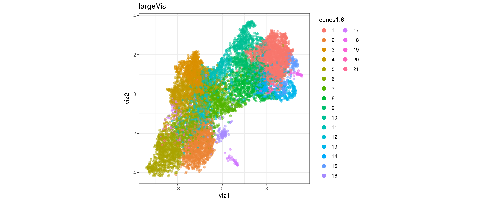
| Version | Author | Date |
|---|---|---|
| 031fd4c | khembach | 2020-09-16 |
for(g in c("integration_group", "sample_id", "group_id", "Stage",
"cl_FullLineage")){
cat("#### ", g, "\n")
plot_conos(dat, title = "largeVis", x = "viz1", y = "viz2", color = g)
cat("\n\n")
}cl_FullLineage
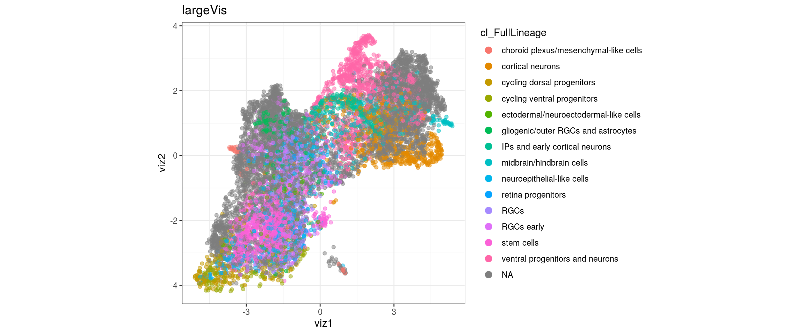
UMAP
for(res in names(dat)[startsWith(names(dat), "conos")]){
cat("#### ", res, "\n")
plot_conos(dat, title = "UMAP", x = "umap1", y = "umap2", color = res)
cat("\n\n")
}conos1.6
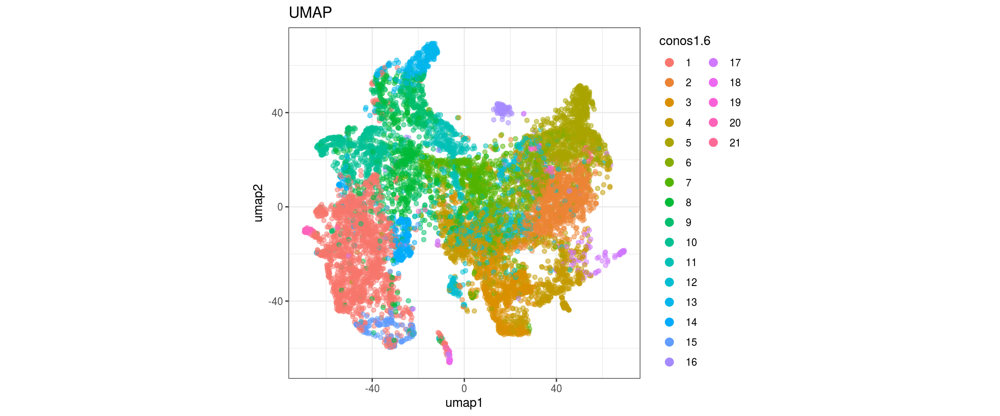
| Version | Author | Date |
|---|---|---|
| 031fd4c | khembach | 2020-09-16 |
for(g in c("integration_group", "sample_id", "group_id", "Stage",
"cl_FullLineage")){
cat("#### ", g, "\n")
plot_conos(dat, title = "UMAP", x = "umap1", y = "umap2", color = g)
cat("\n\n")
}


cl_FullLineage

Label propagation
We want to propagate the cell annotations cl_FullLineage from the organoid dataset onto our cells. Conos uses diffusion propagation based on a random walk for label transfer.
labels <- cols_dt$cl_FullLineage
label_idx <- !is.na(labels)
labels <- labels[label_idx]
labels <- as.factor(labels)
levels(labels) <- c("choroid plexus/mesenchymal-like cells",
"cortical neurons", "cortical neurons",
"cycling dorsal progenitors", "cycling ventral progenitors",
"ectodermal/neuroectodermal-like cells",
"gliogenic/outer RGCs and astrocytes",
"IPs and early cortical neurons", "midbrain/hindbrain cells",
"neuroepithelial-like cells", "retina progenitors", "RGCs",
"RGCs early", "RGCs early", "stem cells", "stem cells",
"stem cells", "ventral progenitors and neurons",
"ventral progenitors and neurons",
"ventral progenitors and neurons")
labels <- setNames(labels, cols_dt$cell_id[label_idx])
new_label <- con$propagateLabels(labels = labels, verbose = TRUE)
label_df <- data.table(cell_id = names(new_label$labels), new_label$labels,
new_label$uncertainty)
setnames(label_df, names(label_df), c("cell_id", "label", "uncertainty"))
fwrite(label_df, label_file)
## distribution of labels per cell
label_dist <- data.table(cell_id = rownames(new_label$label.distribution),
new_label$label.distribution)
fwrite(label_dist, label_distr_file)UMAP with propagated labels
We plot the propagated labels and the uncertainty.
dat <- dat %>% left_join(label_df)
for(g in c("integration_group", "sample_id", "group_id", "Stage",
"cl_FullLineage", "label")){
cat("### ", g, "\n")
plot_conos(dat, title = "UMAP", x = "umap1", y = "umap2", color = g)
cat("\n\n")
}

uncertainty
p <- ggplot(dat, aes(x = umap1, y = umap2, color = uncertainty)) +
geom_point(alpha = 0.5) +
scale_colour_gradient(name = "uncertainty", low = "grey", high = "red") +
ggtitle("UMAP") +
theme_bw() +
theme(aspect.ratio = 1) +
guides(col = guide_legend(nrow = 16,
override.aes = list(size = 3, alpha = 1)))
print(p)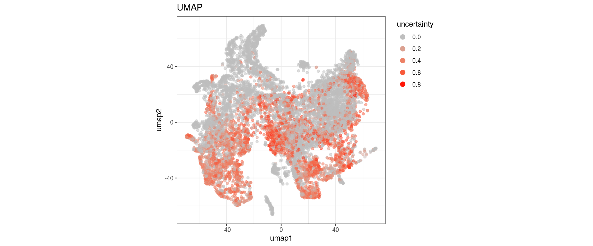
cat("\n\n")
sessionInfo()R version 4.0.0 (2020-04-24)
Platform: x86_64-pc-linux-gnu (64-bit)
Running under: Ubuntu 16.04.6 LTS
Matrix products: default
BLAS: /usr/local/R/R-4.0.0/lib/libRblas.so
LAPACK: /usr/local/R/R-4.0.0/lib/libRlapack.so
locale:
[1] LC_CTYPE=en_US.UTF-8 LC_NUMERIC=C
[3] LC_TIME=en_US.UTF-8 LC_COLLATE=en_US.UTF-8
[5] LC_MONETARY=en_US.UTF-8 LC_MESSAGES=en_US.UTF-8
[7] LC_PAPER=en_US.UTF-8 LC_NAME=C
[9] LC_ADDRESS=C LC_TELEPHONE=C
[11] LC_MEASUREMENT=en_US.UTF-8 LC_IDENTIFICATION=C
attached base packages:
[1] parallel stats4 stats graphics grDevices utils datasets
[8] methods base
other attached packages:
[1] ggplot2_3.3.2 magrittr_1.5
[3] data.table_1.12.8 conos_1.3.0
[5] pagoda2_0.1.1 igraph_1.2.5
[7] Matrix_1.2-18 SingleCellExperiment_1.10.1
[9] SummarizedExperiment_1.18.1 DelayedArray_0.14.0
[11] matrixStats_0.56.0 Biobase_2.48.0
[13] GenomicRanges_1.40.0 GenomeInfoDb_1.24.2
[15] IRanges_2.22.2 S4Vectors_0.26.1
[17] BiocGenerics_0.34.0 Seurat_3.1.5
[19] dplyr_1.0.2 workflowr_1.6.2
loaded via a namespace (and not attached):
[1] Rtsne_0.15 colorspace_1.4-1 rjson_0.2.20
[4] ellipsis_0.3.1 ggridges_0.5.2 rprojroot_1.3-2
[7] XVector_0.28.0 base64enc_0.1-3 fs_1.4.2
[10] farver_2.0.3 leiden_0.3.3 listenv_0.8.0
[13] urltools_1.7.3 ggrepel_0.8.2 RSpectra_0.16-0
[16] codetools_0.2-16 splines_4.0.0 knitr_1.29
[19] jsonlite_1.7.0 ica_1.0-2 cluster_2.1.0
[22] png_0.1-7 uwot_0.1.8 shiny_1.5.0
[25] sctransform_0.2.1 compiler_4.0.0 httr_1.4.1
[28] backports_1.1.9 fastmap_1.0.1 lazyeval_0.2.2
[31] later_1.1.0.1 htmltools_0.5.0 tools_4.0.0
[34] rsvd_1.0.3 gtable_0.3.0 glue_1.4.2
[37] GenomeInfoDbData_1.2.3 RANN_2.6.1 reshape2_1.4.4
[40] rappdirs_0.3.1 Rcpp_1.0.5 vctrs_0.3.4
[43] ape_5.4 nlme_3.1-148 lmtest_0.9-37
[46] sccore_0.1.0 xfun_0.15 stringr_1.4.0
[49] globals_0.12.5 mime_0.9 lifecycle_0.2.0
[52] irlba_2.3.3 dendextend_1.14.0 future_1.17.0
[55] MASS_7.3-51.6 zlibbioc_1.34.0 zoo_1.8-8
[58] scales_1.1.1 promises_1.1.1 RColorBrewer_1.1-2
[61] yaml_2.2.1 reticulate_1.16 pbapply_1.4-2
[64] gridExtra_2.3 triebeard_0.3.0 stringi_1.4.6
[67] Rook_1.1-1 rlang_0.4.7 pkgconfig_2.0.3
[70] bitops_1.0-6 evaluate_0.14 lattice_0.20-41
[73] ROCR_1.0-11 purrr_0.3.4 labeling_0.3
[76] patchwork_1.0.1 htmlwidgets_1.5.1 cowplot_1.0.0
[79] tidyselect_1.1.0 RcppAnnoy_0.0.16 plyr_1.8.6
[82] R6_2.4.1 generics_0.0.2 mgcv_1.8-31
[85] withr_2.2.0 pillar_1.4.6 whisker_0.4
[88] fitdistrplus_1.1-1 survival_3.2-3 RCurl_1.98-1.2
[91] tibble_3.0.3 future.apply_1.6.0 tsne_0.1-3
[94] crayon_1.3.4 KernSmooth_2.23-17 plotly_4.9.2.1
[97] rmarkdown_2.3 viridis_0.5.1 grid_4.0.0
[100] git2r_0.27.1 digest_0.6.25 xtable_1.8-4
[103] tidyr_1.1.0 httpuv_1.5.4 brew_1.0-6
[106] munsell_0.5.0 viridisLite_0.3.0